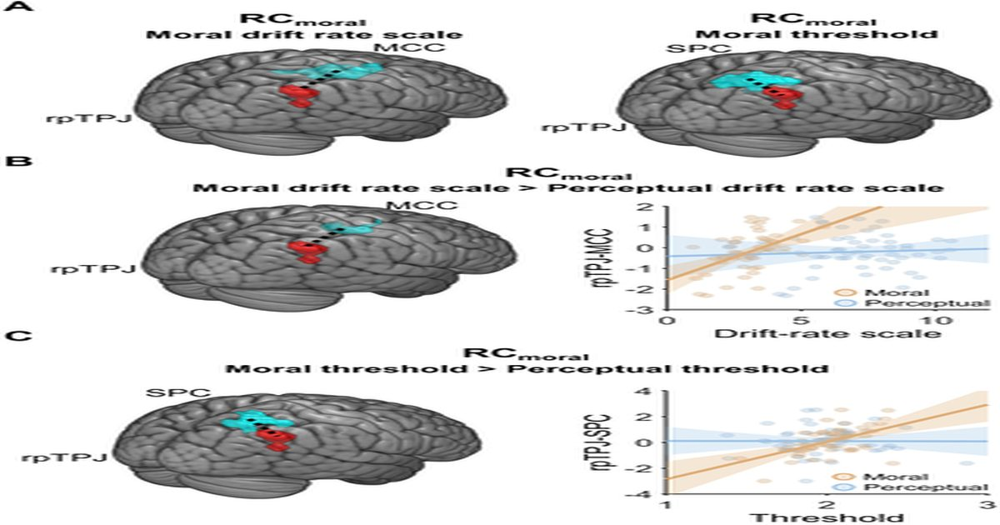

Обработка моральных и перцептивных конфликтов осуществляется различными паттернами активации мозга и функциональной связности
руида Чжу, Маркус Груешов, Мариус Мойса, Чао Лю, Кристиан С.
Рафф В то время как люди похожи на других приматов с точки зрения двигательных и перцептивных способностей, наше поведение однозначно характеризуется моралью - способностью выбирать свои действия на основе конкретных этических ценностей.
Эволюционные истоки и нейробиологические основы морального поведения интенсивно обсуждаются с противоположными предложениями о том, полагаются ли моральные решения на общие решения